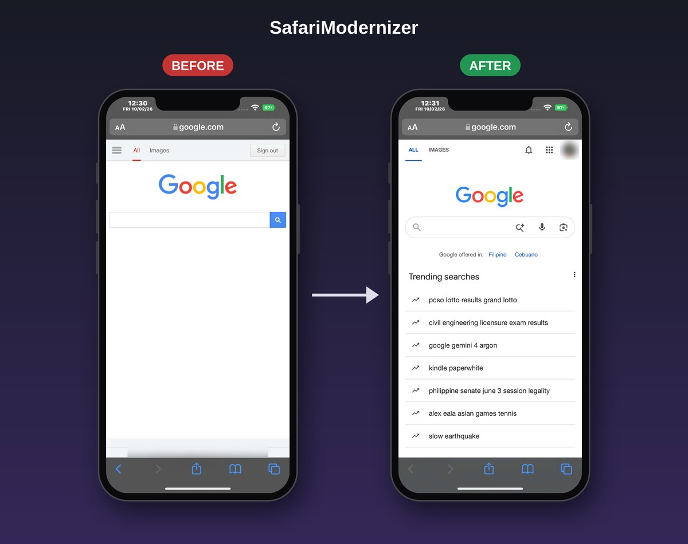

Version 1.0.1 · iOS 15 · by T4MAG0
Makes today's websites work, and look modern, in Safari on iOS 15, and in other browsers like iCab, Firefox, Chrome, Brave, Edge and DuckDuckGo.

Hold two fingers on a page for 2 seconds to open the log panel and per-site settings.